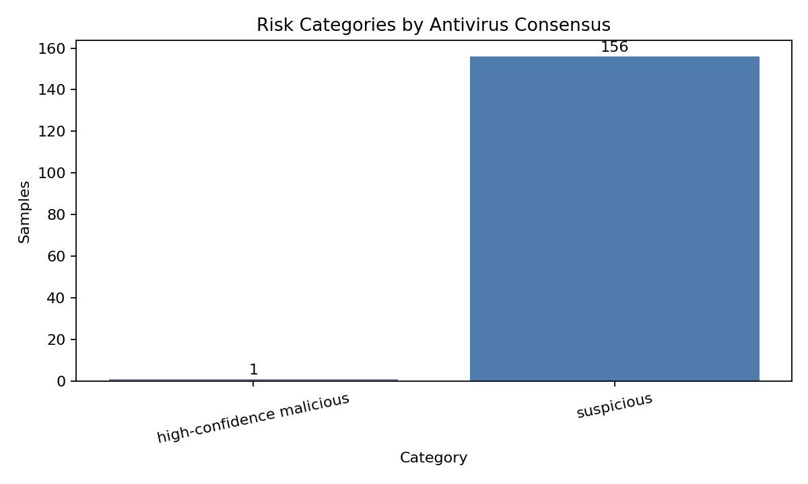
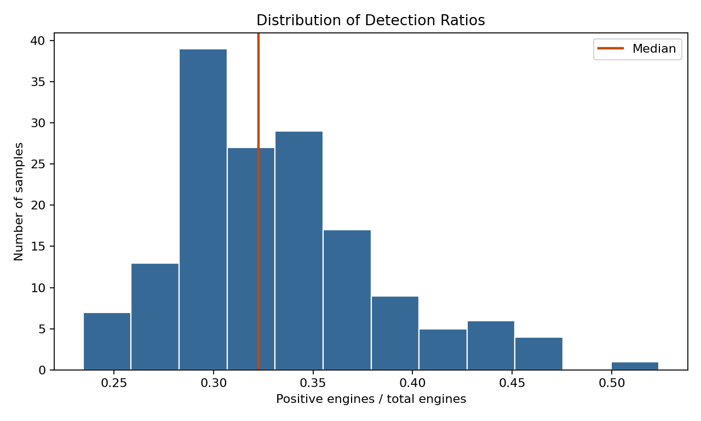
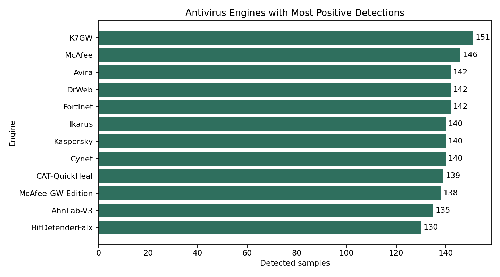
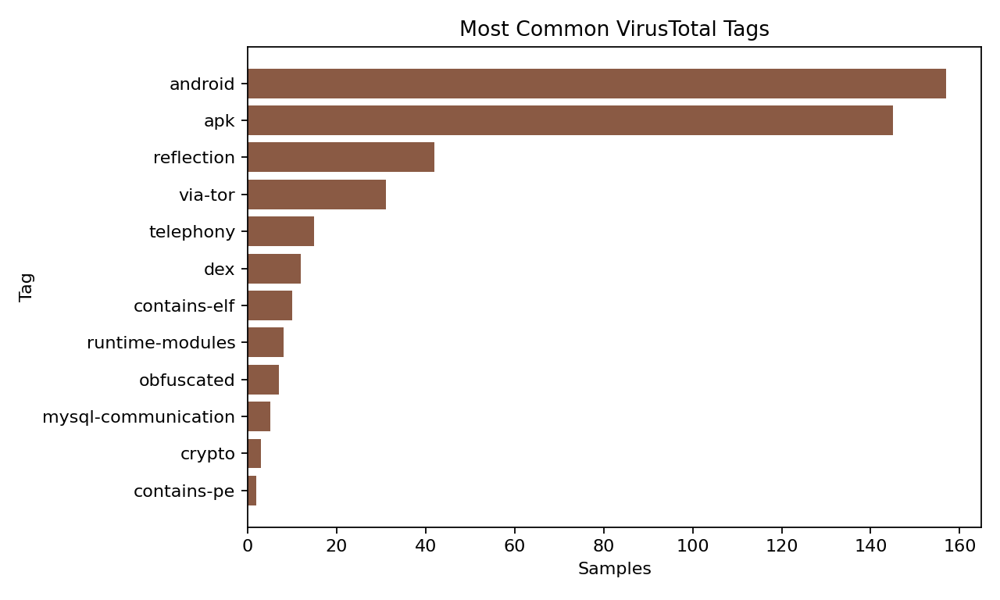
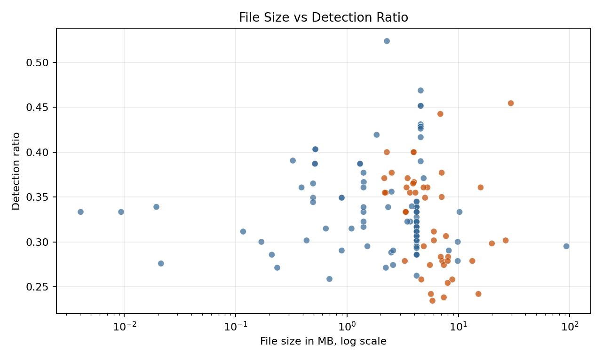
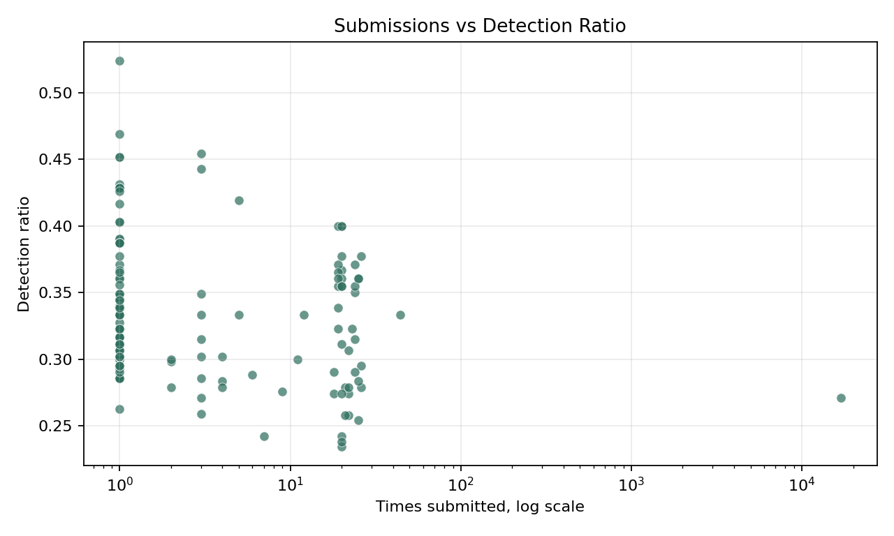
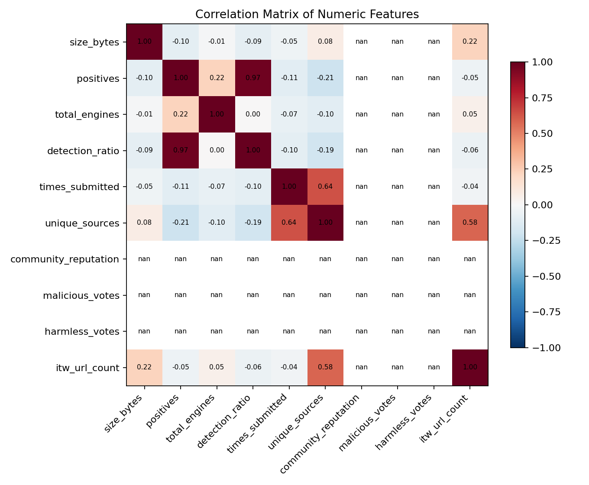

157Android APK reports
9,564engine scan records
66antivirus engines
0.323median detection ratio
Risk Category Distribution

Detection Ratio Distribution

Top Antivirus Engines

VirusTotal Tags

File Size vs Detection Ratio

Submissions vs Detection Ratio

Numeric Feature Correlations
